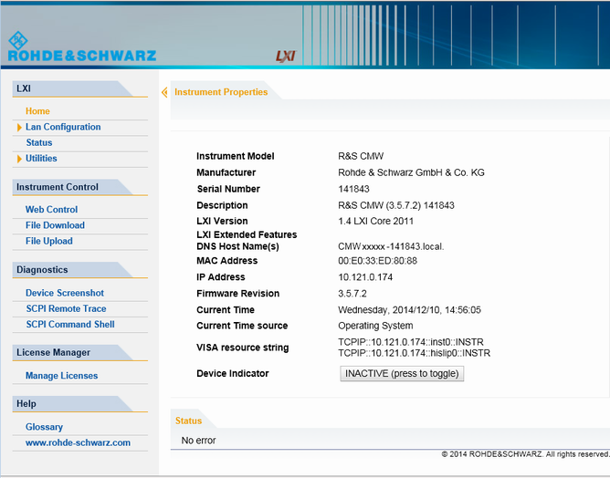

LXI Browser Interface
The instrument's LXI browser interface works correctly with all W3C compliant browsers.
| ► | Type the instrument's host name or IP address in the address field of the browser on your PC, for example "http://10.113.10.203". The instrument home page (welcome page) opens. |

The navigation pane of the browser interface contains the following elements:
- "LXI"
– "Home" opens the instrument home page.
The home page displays the device information required by the LXI standard, including the VISA resource string in read-only format.
The "Device Indicator" is for future use and has currently no effect.– "Lan Configuration" allows you to configure LAN parameters and to initiate a ping, see "LAN Configuration". – "Status" displays information about the LXI status of the instrument. – "Utilities" provides access to the LXI event log functionality required by the LXI standard. - "Instrument Control"
– "Web Control" provides remote access to the instrument via VNC. Enter "VNC" both as user name and as password. – "File Download" downloads files from the instrument. – "File Upload" uploads files to the instrument. - "Diagnostics"
– "Device Screenshot" creates a screenshot of the instrument GUI. The screenshot is displayed in the browser and can be downloaded. – "SCPI Remote Trace" records messages exchanged via the remote control interface, see "SCPI Remote Trace". – "SCPI Command Shell" provides a simple shell for sending SCPI commands to the instrument. - "License Manager"
– "Manage Licenses" allows you to install or uninstall license keys and to activate, register or unregister licenses. - "Help"
– "Glossary" explains terms related to the LXI standard. – "www.rohde-schwarz.com" opens the Rohde & Schwarz home page.